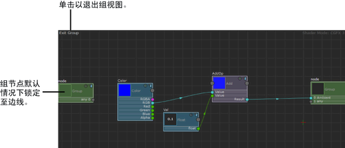

可视化组内容
- 单击节点顶部的“组”(Group)
 图标可以可视化其组网络。
图标可以可视化其组网络。 若要返回到主节点网络，请单击“ShaderFX”编辑器左上角的“退出组”(Exit Group)。

注： 默认情况下，会将组节点锁定到“ShaderFX”编辑器的四周。要自定义其位置并移动节点，请禁用 Settings > Lock Group to Sides。
可视化组内容
图标可以可视化其组网络。 若要返回到主节点网络，请单击“ShaderFX”编辑器左上角的“退出组”(Exit Group)。